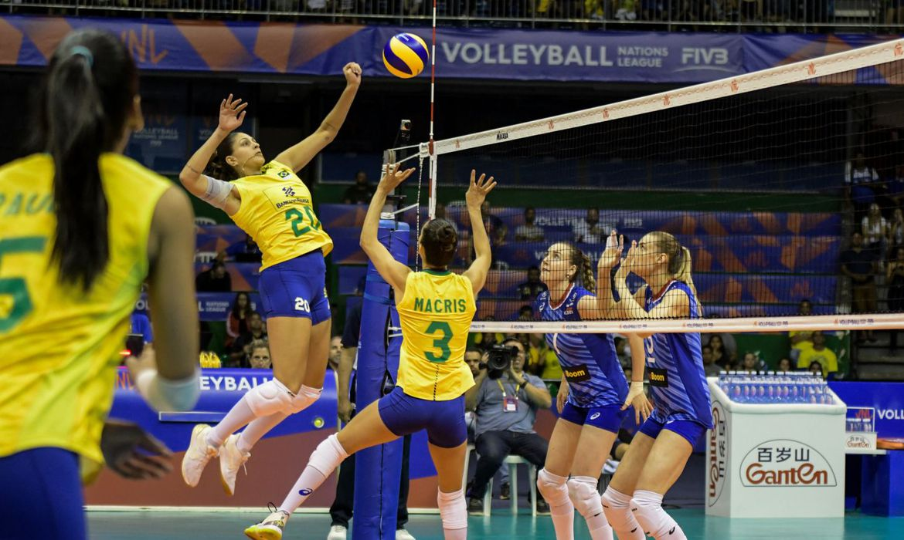
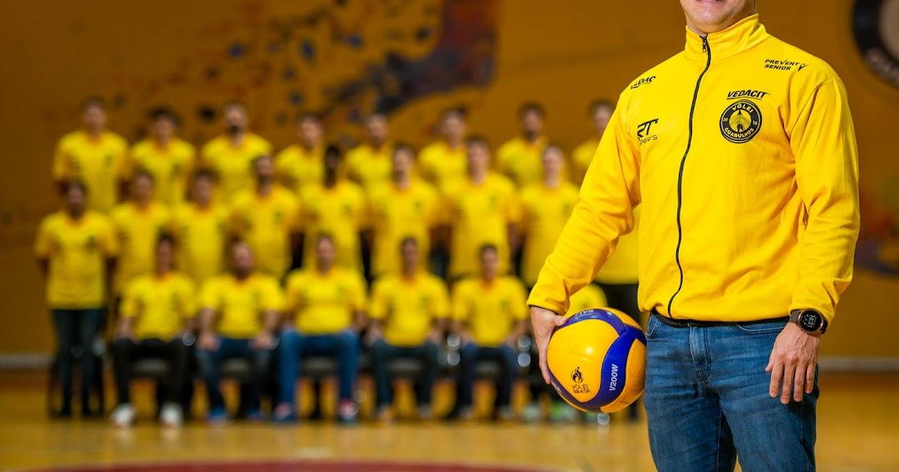

Volei
O voleibol ou vôlei é um esporte coletivo praticado em uma quadra dividida por uma rede. Duas equipes disputam a partida com o objetivo de tocar a bola no campo adversário, a qual deve ser arremessada por cima da rede. O esporte é um dos mais populares no Brasil e no mundo em termos de praticantes e audiência.

História do Vôlei
O vôlei foi inventado em 1895 nos Estados Unidos por William G. Morgan, um instrutor de educação física. O objetivo inicial era criar um esporte que fosse uma mistura de basquete e tênis, com regras mais simples e que pudesse ser jogado em ambientes fechados. O esporte foi chamado de "mintonette" e tinha o objetivo de ser uma atividade recreativa para as aulas de educação física. Em um primeiro momento, as regras eram bem simples, e o esporte não tinha grande estrutura, mas a partir de 1900, o vôlei foi evoluindo.
O nome "vôlei" surgiu em 1896, após um torneio experimental, quando o movimento do jogo de "volley" (golpear a bola no ar) foi notado pelos participantes, e a modalidade recebeu esse nome. Nos anos seguintes, o vôlei foi se expandindo, com as regras sendo aperfeiçoadas e o esporte sendo introduzido em vários países. Durante as primeiras décadas do século XX, o vôlei ganhou notoriedade na Europa e na América Latina, onde países como o Brasil e a Argentina começaram a desenvolver campeonatos e ligas nacionais.
O Jogo e as Regras
O vôlei é jogado entre duas equipes de seis jogadores, e o objetivo é passar a bola sobre a rede para o lado do adversário, de forma que ele não consiga devolver a bola de maneira legal. Cada time possui três toques para realizar esse objetivo, com a bola sendo passada entre os jogadores através de passes, levantamentos e ataques, antes de ser enviada ao campo adversário.
As regras são claras: a cada ponto, as equipes trocam de lado, e o primeiro time a atingir 25 pontos, com pelo menos dois pontos de diferença, vence o set. Uma partida pode ser composta de três ou cinco sets, dependendo da competição. O time que vencer o número de sets preestabelecido, geralmente dois ou três, é o vencedor da partida. No caso de um tie-break (último set), o time precisa de 15 pontos para vencer, também com dois pontos de diferença.
Além disso, existem regras que garantem a segurança e a dinâmica do jogo, como a proibição de jogadores de tocarem a rede ou de invadir a área do adversário durante o jogo. A bola pode ser tocada de diversas maneiras, incluindo a recepção (ou passe), o levantamento e o ataque (ou cortada), sendo que cada tipo de toque exige técnica e habilidade específicas.
As Habilidades Técnicas no Vôlei
Uma das características mais marcantes do vôlei é a necessidade de grande técnica e habilidade de seus jogadores. Cada ação no jogo exige controle absoluto do corpo, principalmente nas posições de recepção, levantamento e ataque. O passe é um dos fundamentos mais básicos do jogo e exige destreza e concentração. O jogador precisa usar seus braços de maneira precisa para conduzir a bola até o levantador de forma eficiente, sem que a bola perca a qualidade do toque.
O levantamento é outro fundamento fundamental no vôlei. O levantador tem o papel crucial de distribuir a bola de forma inteligente, dando aos atacantes as melhores condições para realizar o ponto. Ele deve ser capaz de observar as movimentações do time adversário e tomar decisões rápidas sobre a melhor jogada a ser feita. A habilidade de um bom levantador pode ser a diferença entre um ataque eficaz e uma bola perdida.
O ataque, ou cortada, é talvez o momento mais emocionante do jogo. O jogador de ataque precisa ter uma combinação de força, timing e precisão. Durante o ataque, o jogador tenta desferir um golpe poderoso na bola, de forma que ela passe com velocidade para o lado adversário e seja difícil de ser bloqueada ou defendida.
A Evolução do Vôlei
Com o tempo, o voleibol se transformou em um esporte de alto nível competitivo, com suas próprias ligas, campeonatos e seleções nacionais. Em 1964, o voleibol foi incluído nos Jogos Olímpicos de Tóquio, marcando um marco importante na sua trajetória. Desde então, o esporte tem sido uma das atrações mais aguardadas nas Olimpíadas, com disputas emocionantes entre as melhores equipes do mundo.
As seleções brasileiras, tanto masculina quanto feminina, têm sido protagonistas na história do vôlei internacional. O Brasil tem conquistado títulos em campeonatos mundiais e torneios olímpicos, com um legado de jogadores lendários, como Giba, Bernardinho, Zé Roberto, Fabi, Sheilla, entre outros. O país é reconhecido mundialmente pelo seu estilo de jogo vibrante e pela habilidade técnica de seus atletas.
O Vôlei de Praia
Além do vôlei tradicional de quadra, o vôlei de praia se destaca como uma versão popular do esporte, especialmente em países com clima quente, como o Brasil. O vôlei de praia é jogado em uma quadra menor, com apenas dois jogadores em cada time, o que exige mais versatilidade e resistência física dos atletas. A dinâmica do jogo é mais intensa, devido à menor quantidade de jogadores e às dificuldades impostas pelo ambiente de areia e vento. Assim como o vôlei de quadra, o vôlei de praia também tem suas competições internacionais, com destaque para o Circuito Mundial de Vôlei de Praia e os Jogos Olímpicos, onde as equipes brasileiras também se destacam com títulos e medalhas.
O Vôlei e o Trabalho em Equipe
No vôlei, o trabalho em equipe é a chave para o sucesso. A habilidade individual de um jogador pode ser importante, mas é a união e a colaboração entre os membros da equipe que definem o resultado da partida. Cada jogador tem um papel importante a cumprir, e isso reflete diretamente na performance coletiva do time. Desde o momento em que a bola é sacada até o momento em que é defendida ou atacada, a comunicação e o entrosamento entre os jogadores são fundamentais.
A cada jogada, a confiança e a cooperação entre os atletas são testadas, e o sucesso no vôlei é muitas vezes resultado de uma boa dinâmica de grupo, mais do que de talentos individuais. A disciplina, o respeito mútuo e a capacidade de superar desafios juntos são qualidades essenciais em uma equipe de vôlei vitoriosa.
Aquecimento

O aquecimento antes de um jogo de vôlei é fundamental para preparar os músculos e o sistema cardiovascular, aumentar a flexibilidade e prevenir lesões. Um bom aquecimento também melhora a concentração mental, favorecendo o desempenho dos jogadores. Abaixo, descrevo uma lista de processos e atividades recomendadas para o aquecimento de jogadores de vôlei:
1. Aquecimento Geral (10-15 minutos)
O objetivo principal é aumentar a temperatura corporal e melhorar a circulação sanguínea. Pode ser feito de forma gradual e progressiva.
Corrida leve ou trote: A primeira parte do aquecimento deve começar com 5 a 10 minutos de corrida leve. O trote deve ser feito em torno da quadra ou ao longo do ginásio, mantendo a intensidade baixa para ativar os músculos.
Saltos e movimentos articulares: Realizar saltos suaves e movimentos articulares amplos (como rotações de braços, ombros, tornozelos e quadris) ajuda a preparar as articulações para o movimento explosivo que o vôlei exige.
2. Exercícios de Mobilidade Articular (5-10 minutos)
Esses exercícios aumentam a amplitude de movimento e a flexibilidade das principais articulações envolvidas no jogo.
Rotações de ombro: Com os braços estendidos para os lados, faça movimentos circulares com os ombros, em direção aos movimentos para frente e para trás. Esse exercício prepara os músculos do ombro, que são amplamente utilizados no levantamento, saque e defesa.
Rotações de quadril: Coloque as mãos na cintura e faça círculos amplos com o quadril. Isso aumenta a mobilidade dos quadris, preparando os jogadores para as mudanças rápidas de direção e explosões necessárias no vôlei.
Torções de tronco: Com os pés firmes no chão, realize rotações suaves do tronco para cada lado. As torções ajudam a soltar a coluna e os músculos laterais do corpo, importantes para movimentos de corte e defesa.
3. Ativação Muscular (10-15 minutos)
Após a mobilização, é importante ativar os músculos principais envolvidos no vôlei.
Agachamentos: Realizar agachamentos leves, com o objetivo de ativar as pernas, quadris e glúteos. Os agachamentos são importantes para os saltos e a movimentação rápida na quadra.
Afundos (lunges): Os afundos ajudam a fortalecer os músculos das pernas e glúteos, além de melhorar o equilíbrio e a estabilidade do jogador. Esse exercício também contribui para a preparação dos músculos para movimentos laterais rápidos.
Saltos no lugar: Realizar saltos de agachamento ou pulos com flexão dos joelhos ajuda a ativar os músculos das pernas, importantes para ataques e bloqueios.
4. Alongamento Dinâmico (5-10 minutos)
Alongamentos dinâmicos são importantes para aumentar a flexibilidade ativa, sem comprometer a mobilidade.
Alongamento de isquiotibiais: Com uma perna estendida à frente, toque a ponta do pé com a mão oposta, alternando entre as pernas. Esse exercício alonga os músculos posteriores das coxas e prepara para movimentos de aceleração e desaceleração.
Esticar os músculos do quadril e panturrilha: Com uma perna à frente, coloque a outra atrás e realize flexões do joelho. Isso estica as panturrilhas e os flexores do quadril, que são cruciais para os saltos e os deslocamentos rápidos.
5. Específico para Vôlei (10-15 minutos)
Exercícios específicos para o vôlei ajudam a preparar o corpo para os movimentos e ações do jogo, além de aprimorar a coordenação e o controle.
Toque de bola (passe): Realizar passes simples com um parceiro para aquecer os músculos dos braços, ombros e mãos. O passe é um dos fundamentos mais usados no vôlei, então é importante focar na técnica e na precisão.
Levantamento: Executar levantamentos simples com um parceiro ou contra a parede. Isso ajuda a ativar os músculos dos ombros, cotovelos e punhos, que serão usados intensamente durante o jogo.
Bloqueio e salto: Realizar saltos simulando o movimento de bloqueio, como se estivesse enfrentando um atacante adversário. Esse exercício ajuda a preparar os músculos das pernas para saltos verticais rápidos e para o movimento explosivo.
Saque: Com um parceiro, realizar saques leves para praticar a técnica e preparar o braço e o ombro para o movimento de impacto. Esse exercício é essencial para garantir que o jogador tenha controle durante o saque durante a partida.
6. Atividades de Coordenação e Agilidade (5-10 minutos)
Essas atividades são importantes para aprimorar a capacidade de movimentação rápida e mudanças de direção.
Dribles com bola: Driblar a bola em pequenas áreas de forma rápida e controlada, alternando entre diferentes direções, ajuda a melhorar a coordenação e a agilidade.
Deslocamentos laterais: Realizar exercícios de deslocamento lateral (shuffling) de um lado para o outro ao longo de uma linha, para treinar a reação rápida e os movimentos laterais usados em defesa e recepção de saque.
Escada de agilidade: Usar uma escada de agilidade no chão e realizar movimentações rápidas entre os quadrados (para frente, para trás, para os lados). Esse exercício ajuda a melhorar a velocidade, agilidade e precisão dos movimentos.
7. Aquecimento Mental e Físico Final (5 minutos)
Finalizar o aquecimento com um exercício leve, onde os jogadores podem focar na mentalização do jogo e no aumento da concentração.
Respiração profunda e relaxamento: Realizar exercícios de respiração profunda para reduzir a tensão e aumentar o foco mental. Isso ajuda os jogadores a se prepararem psicologicamente para a intensidade do jogo.
Reflexões rápidas sobre estratégias: Antes de iniciar a partida, o treinador pode aproveitar os últimos minutos de aquecimento para passar uma rápida revisão das táticas do time, reforçando os pontos-chave da estratégia para o jogo.
Cuidados pessoais
"A prática de atividade física é, sem dúvida, essencial para aumentarmos nossa qualidade de vida. Inúmeros estudos demonstram como a prática frequente de atividade física evita doenças e melhora, até mesmo, nossa disposição para a realização de nossas atividades diárias. A seguir, listaremos os principais benefícios de se praticar atividades físicas e também os riscos de se ter uma vida sedentária."
Os cuidados pessoais no vôlei são fundamentais para manter a saúde, prevenir lesões e melhorar o desempenho dos atletas. Entre os cuidados essenciais, destaca-se a prevenção de lesões, com o uso de tênis adequado, alongamentos e aquecimento antes das atividades. Hidratação é crucial para evitar cãibras e melhorar a resistência, assim como uma alimentação balanceada para garantir energia e recuperação. O descanso adequado também é importante, pois permite a recuperação muscular. Além disso, é essencial cuidar da postura durante os movimentos, especialmente no saque e no salto, para evitar sobrecarga nas articulações. O uso de protetores, como joelheiras e cotoveleiras, pode prevenir lesões durante o jogo, e a higiene pessoal (como a limpeza regular das mãos e das unhas) contribui para a saúde geral do atleta.